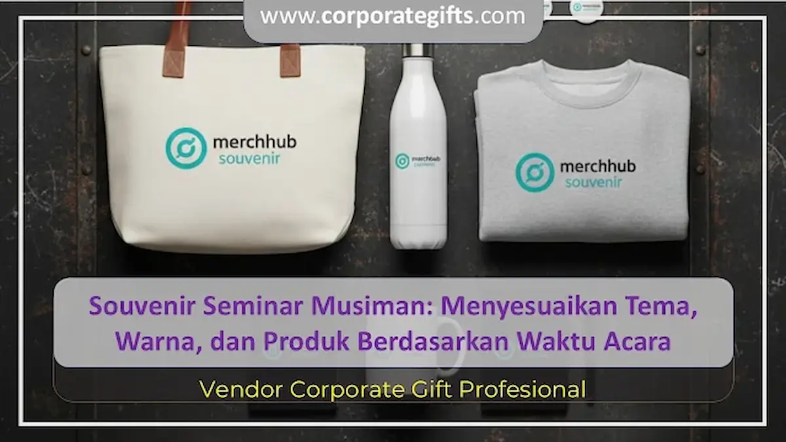

Corporate Gifts ID - Souvenir seminar musiman adalah bingkisan cinderamata yang dikurasi dan disesuaikan secara khusus dengan kondisi cuaca, musim kalender, atau momentum waktu pelaksanaan acara konferensi, seperti botol minum penahan dingin saat cuaca terik atau payung lipat portabel di musim hujan. Sebagaimana dijabarkan dalam ulasan komprehensif mengenai panduan lengkap jenis dan manfaat souvenir seminar, relevansi fungsional merupakan kunci utama agar paket cinderamata tidak berakhir sia-sia di laci peserta.
Dalam setiap penyelenggaraan seminar, workshop korporat, maupun pelatihan diklat instansi pemerintah, bingkisan seminar kit memegang peranan vital dalam membentuk kesan pertama audiens. Cinderamata yang langsung menjawab kebutuhan fisik peserta saat keluar dari gedung pertemuan akan menciptakan ikatan emosional positif yang kuat terhadap identitas penyelenggara acara.
Poin Kunci Souvenir Seminar Musiman:
- Daya Guna Seketika: Hadiah langsung menjawab tantangan cuaca yang dihadapi peserta pada hari kegiatan berlangsung.
- Efisiensi Anggaran Promosi: Menghindari pembelanjaan barang pajangan pasif yang mudah dibuang, memaksimalkan biaya per impresi (cost per impression).
- Harmonisasi Estetika Musim: Pemilihan warna, kemasan, dan bahan dasar selaras dengan nuansa psikologis audiens sepanjang tahun.
- Kesiapan Logistik Terjadwal: Mengantisipasi lonjakan permintaan di akhir tahun atau pergantian musim dengan perencanaan produksi lebih awal.
Mengapa Souvenir Seminar Perlu Disesuaikan dengan Musim?
Memberikan souvenir seminar yang relevan dengan cuaca memperlihatkan empati mendalam dari pihak penyelenggara terhadap kenyamanan peserta. Sebagai contoh, di tengah teriknya musim kemarau, peserta akan jauh lebih antusias menerima tumbler stainless steel penahan suhu atau kipas genggam elektrik daripada buku catatan bersampul tebal yang jarang dibuka.
Sebaliknya, saat musim hujan tiba, memberikan payung lipat kokoh dengan cetakan logo elegan akan langsung melindungi peserta dari terpaan air hujan saat meninggalkan lokasi acara. Nilai kepraktisan langsung ini secara spontan mengubah status barang dari sekadar pajangan promosi menjadi perlengkapan andalan harian.
Inspirasi Souvenir Seminar Berdasarkan 4 Waktu Acara
Agar kurasi paket seminar kit Anda selalu tepat sasaran, berikut adalah pemetaan kurasi produk berdasarkan empat siklus waktu utama:
1. Musim Kemarau & Cuaca Panas (Dry Season)
Musim kemarau identik dengan suhu udara tinggi dan mobilitas dinamis luar ruangan. Produk yang menghidrasi dan memberikan kesegaran fisik menjadi primadona:
- Tumbler Stainless Insulasi Ganda: Mampu menjaga kesegaran air dingin hingga 12 jam, ideal dibawa beraktivitas ke kantor maupun luar ruangan.
- Kipas Mini USB Portable: Solusi penyejuk udara ringkas yang dapat diisi ulang daya menggunakan laptop atau power bank.
- Topi Baseball Katun atau Kacamata UV: Aksesori fungsional penahan silau matahari yang dapat dibubuhi bordir logo perusahaan secara bersahaja.
2. Musim Hujan & Pancaroba (Monsoon Season)
Tantangan utama di musim penghujan adalah menjaga dokumen, gawai, dan pakaian agar tetap kering dan terlindungi dari kelembapan:
- Payung Lipat Otomatis Anti-Angin: Praktis disimpan dalam tas kerja dengan kerangka fiber yang kokoh menahan hembusan angin kencang.
- Waterproof Pouch atau Dry Bag Ringkas: Kantong anti-air pelindung ponsel pintar, dompet, dan flash disk dari cipratan air.
- Jas Hujan Ponco Lipat Portabel: Dikemas dalam tabung gantungan kunci yang ringan dan mudah diselipkan pada ransel peserta.
3. Akhir Tahun & Q4 (Year-End Review & Annual Meeting)
Bulan November hingga Desember lekat dengan momentum evaluasi tahunan, penyusunan target strategis baru, dan apresiasi pencapaian:
- Kalender Meja Eksklusif: Dilengkapi wadah catatan dan pen holder kayu yang menghiasi meja kerja rekanan sepanjang 365 hari ke depan.
- Executive Undated Planner: Buku agenda bersampul kulit sintetis mewah dengan tata letak perencanaan kerja fleksibel.
- Gift Set Kombinasi Pulpen Metal & Tumbler: Bingkisan dalam boks kaku eksklusif yang mencerminkan prestise kemitraan korporat.
4. Peringatan Hari Besar Nasional & Acara Tematik
Seminar yang bertepatan dengan momen hari kemerdekaan, hari bumi, atau perayaan keagamaan mendapatkan nilai emosional lebih tinggi melalui sentuhan cinderamata bertema khusus:
- Tote Bag Kanvas Motif Budaya: Mengangkat ornamen kearifan lokal Nusantara dengan teknik sablon ramah lingkungan.
- Perlengkapan Eco-Friendly: Set sedotan baja tahan karat, sendok garpu bambu, dan tas belanja lipat untuk mendukung tema keberlanjutan.

Kombinasi warna dan bahan ramah lingkungan mempertegas pesan peduli keberlanjutan dari institusi penyelenggara.
Tabel Rekomendasi Souvenir Seminar Berdasarkan Musim
Gunakan tabel matriks komparasi di bawah ini untuk mempermudah panitia pengadaan dalam menentukan kombinasi produk, palet warna, dan estimasi daya gunanya:
| Musim / Waktu Pelaksanaan | Rekomendasi Produk Utama | Palet Warna Dominan | Kelebihan Bagi Peserta | Nilai Retensi Branding |
|---|---|---|---|---|
| Musim Kemarau | Tumbler vacuum flask, kipas USB, topi bordir | Biru laut cerah, toska, putih bersih | Menjaga tubuh terhidrasi dan sejuk di cuaca panas | Sangat tinggi (dipakai harian di meja kantor & luar ruangan) |
| Musim Hujan | Payung lipat fiber, dry bag mini, mug termos | Abu-abu arang, biru dongker (navy), hijau zaitun | Melindungi gawai dan dokumen dari basah air hujan | Tinggi (disimpan di tas kerja sebagai alat darurat) |
| Akhir Tahun | Kalender meja, leather planner, pen set metal | Emas, hitam elegan, merah marun matang | Membantu perencanaan kerja dan target tahun depan | Ekstrem (terpampang di atas meja kerja sepanjang tahun) |
| Peringatan Khusus | Tote bag etnik, sendok bambu, pouch rPET | Terakota, krem alami, hijau daun | Mendukung gaya hidup minim sampah dan cinta budaya | Tinggi (meningkatkan citra positif green branding) |
Menentukan Palet Warna dan Desain Branding yang Tepat
Harmoni visual antara identitas perusahaan dan nuansa musim sangat menentukan apakah souvenir tersebut terlihat mewah atau justru murahan:
- Kesesuaian Pedoman Merek (Brand Guidelines): Logo instansi harus tetap menjadi fokus utama dengan warna baku yang tidak menyimpang. Apabila warna merek sangat kontras dengan tema musim, gunakan warna latar netral (seperti abu-abu gelap atau hitam matte) sebagai penyeimbang.
- Sentuhan Aksen Musiman: Gunakan warna cerah segar pada musim kemarau, nuansa earthy yang menenangkan pada musim penghujan, serta aksen foil perak atau emas untuk nuansa eksklusif perayaan akhir tahun.
- Penempatan Logo Proporsional: Hindari mencetak logo terlalu besar yang memenuhi permukaan produk. Desain minimalis dengan ukiran grafir laser atau sablon presisi tinggi justru memberikan kesan modern yang membuat peserta bangga memakainya di ruang publik.
Tips Memilih Vendor Souvenir Musiman dan Lead Time Produksi
Mengadakan paket seminar kit musiman menuntut koordinasi waktu yang presisi. Berikut adalah tahapan penting saat berinteraksi dengan mitra penyedia:
- Validasi Portofolio dan Uji Sampel Fisik: Sebelum menyetujui produksi massal, selalu mintalah sampel barang asli (proof sample) untuk memeriksa ketebalan kain payung, kerapatan insulasi tumbler, atau kehalusan jilid buku agenda.
- Pesan Minimal 3-4 Minggu Lebih Awal: Memasuki musim puncak (peak season) seperti akhir tahun kuartal empat, kapasitas pabrikasi cetak biasanya melonjak tajam. Memesan jauh hari menghindarkan panitia dari denda ongkos kilat atau keterlambatan pengiriman.
- Pemberian Cadangan Stok (Buffer Stock): Selalu anggarkan kelebihan 5-10% dari total target peserta guna mengantisipasi pendaftaran dadakan atau tamu VIP di menit-menit akhir.
Dampak Strategis dan Retensi Branding Jangka Panjang
Investasi cinderamata musiman menghasilkan tingkat pengembalian nilai merek (Brand ROI) yang jauh lebih tinggi. Saat sebuah payung atau tumbler terus dipakai selama berbulan-bulan setelah acara usai, eksposur logo perusahaan akan terlihat berulang kali oleh rekan kerja, keluarga, dan publik di lingkungan sekitar peserta.
Pendekatan ini secara bertahap membangun reputasi organisasi Anda sebagai entitas yang profesional, perhatian terhadap detail, serta senantiasa mengedepankan mutu dalam setiap sentuhan interaksi.
FAQ Seputar Souvenir Seminar Musiman
Kesimpulan dan Solusi Seminar Kit CorporateGifts.ID
Mengintegrasikan faktor musim ke dalam rencana pengadaan souvenir seminar musiman merupakan langkah cerdas untuk menghadirkan pengalaman berkesan bagi setiap audiens. Dengan memilih jenis barang yang tepat guna, warna yang memikat, dan kualitas bahan baku yang awet, acara seminar Anda tidak hanya sukses saat berlangsung, tetapi terus dibicarakan dalam waktu yang panjang.
Jadikan acara konferensi korporat Anda berikutnya tak terlupakan bersama CorporateGifts.ID. Kami menyediakan layanan konsultasi desain gratis, visual mockup digital, dan ratusan katalog produk siap cetak. Jelajahi aneka paket pada halaman katalog paket seminar kit kami atau ajukan permintaan estimasi anggaran resmi melalui formulir RFQ Corporate Gifts ID hari ini!

Ditulis oleh: Sholikhatun Nikmah
Creative Product Designer & Bespoke Packaging ConsultantDesainer produk dan pakar struktur kemasan kustom di CorporateGifts.ID. Berpengalaman lebih dari 7 tahun dalam merancang identitas merchandise korporat, eksplorasi material ramah lingkungan, dan standardisasi produksi cinderamata instansi berskala nasional.
Lihat Profil Lengkap & Panduan Lainnya